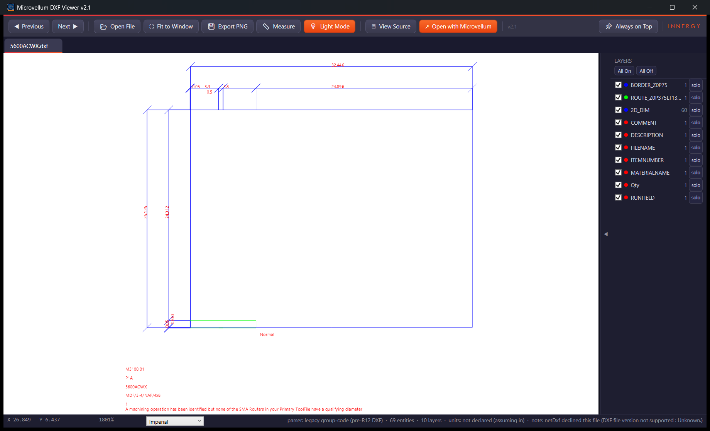
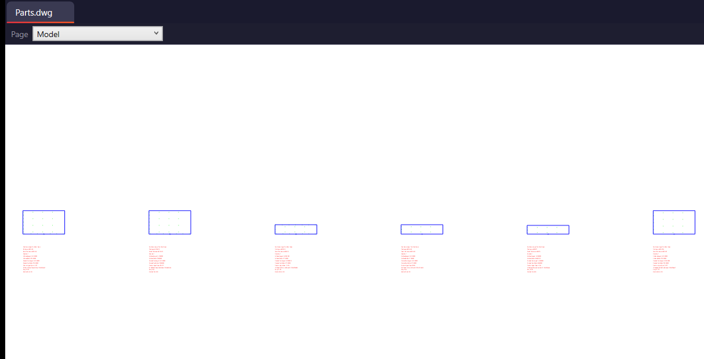
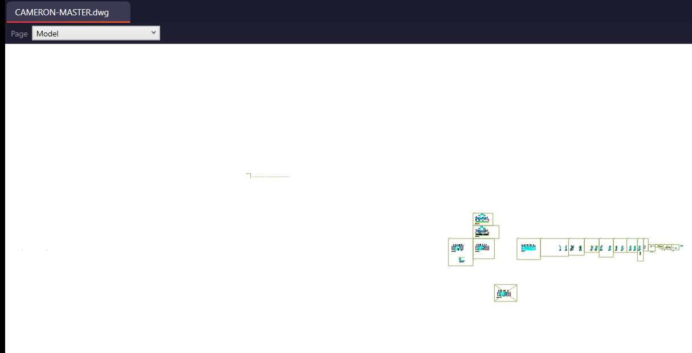
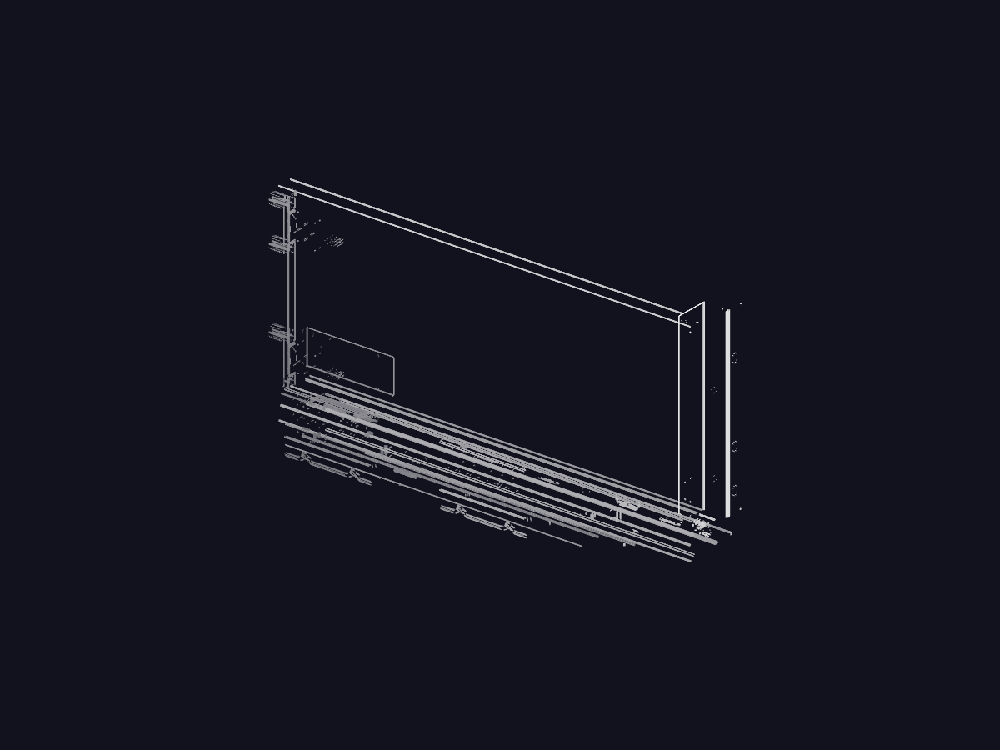

1 — What it's for
A Microvellum work order drops dozens of DXF files into one folder. Open any one of them and step through the rest with the arrow keys — no file dialog, no reopening, no waiting for CAD. When a drawing needs the real thing, send it straight to Microvellum from the toolbar.
Every DXF and DWG in the same folder, in order, wrapping at either end. The view re-fits on each one.
Launches the current file in Microvellum when you need to go further than looking.
Pin the viewer above Microvellum and compare the two side by side.

1 2 3 4 5 6 7 8 91Previous / Next — step the folder. Same as ← and →.
2Open File — or drag one in. Ctrl+O. Opens in a tab.
3Fit to Window — re-centres the drawing. Also F.
4Export PNG — an image of the drawing at full size.
5Measure — crosshair and live distance between two points.
6Light Mode — white drawing ground, as shown here.
7View Source — opens the raw file in Notepad.
8Open with Microvellum — the current file, in Microvellum.
9Always on Top — keeps the viewer above other windows.
2 — What else it does


